Todas las pantallas y flujos diseñados en un solo lugar
Explora los 4 universos estéticos completos inspirados en Facebook (Feed de publicación, Sugerencias de Amigos, Reels inmersivos y Marketplace), junto con las 4 maquetas interactivas navegables.
✨ Las 4 Apps Interactivas con Flujo Completo
Pasa de una pantalla a otra pulsando en las pestañas inferiores y botones directos.
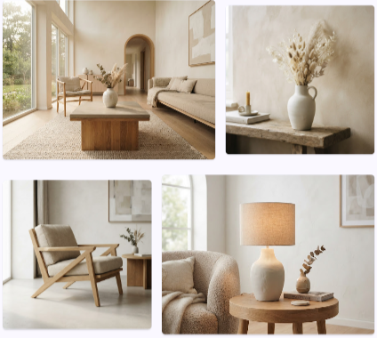
Minimalista Moderno
Feed nórdico, buscador de amigos, reel de arquitectura y tienda de diseño.
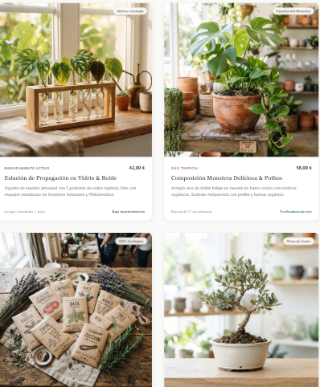
Mercado Botánico
Comunidad botánica, comentarios alineados a la derecha, reel de plantas y marketplace.
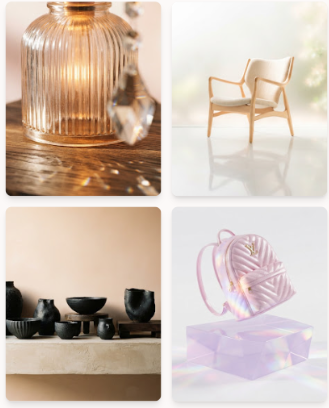
Tonos Pastel
Feed suave lifestyle con fotos HD, amigos en común, reel de cerámica y catálogo.
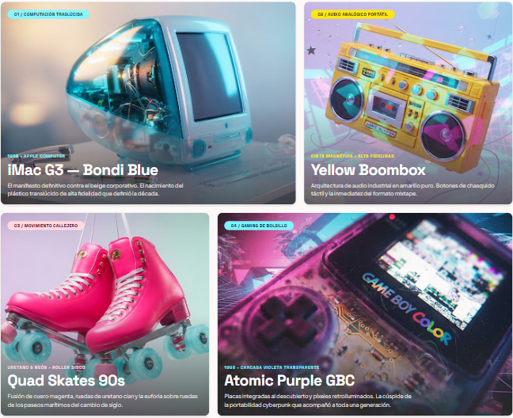
Retro Pop Neón Y2K
Estética noventera, trazos negros gruesos, cian y magenta neón vibrantes.
🌸 Estilo Tonos Pastel & Tipografía Suave
Inspirado en la interacción limpia de Facebook con paleta lavanda, melocotón y rosado suave.
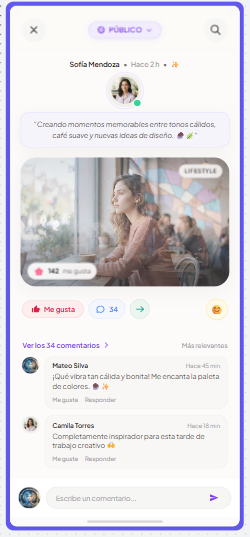
Post social con foto, contador de likes, sticker de reacción y comentarios directos.
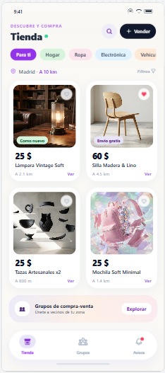
Cuadrícula de productos de diseño, precios y barra de navegación inferior.
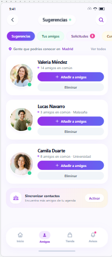
Tarjetas de personas sugeridas con fotos de perfil reales, amigos en común y botones de añadir.
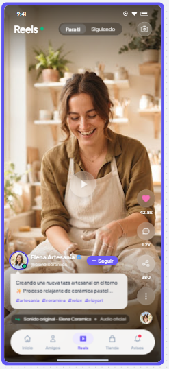
Vídeo vertical de alfarería con overlays de likes, comentarios, compartir y audio giratorio.
🌿 Mercado Botánico & Tonos Verdosos
Atmósfera natural en verde salvia, matcha y musgo con tipografía editorial orgánica.
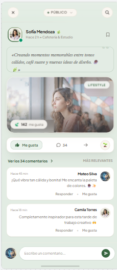
Fondo verde completo, foto de Monstera y comentarios con avatar alineado a la derecha.
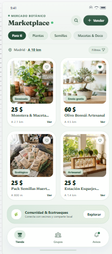
Semillas ecológicas, Monstera en terracota, tubos de enraizado y bonsai de olivo.
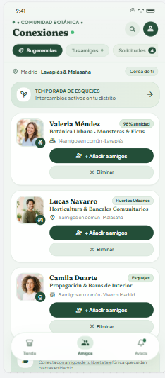
Contactos afines a la jardinería y botánica con el mismo tono verde exacto.
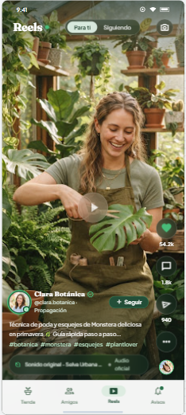
Vídeo vertical en vivero botánico con poda de plantas y controles adaptados.
⚡ Retro Pop Neón Y2K
Colores chillones noventeros, bordes negros gruesos, etiquetas con badges y estilo neo-brutalista.
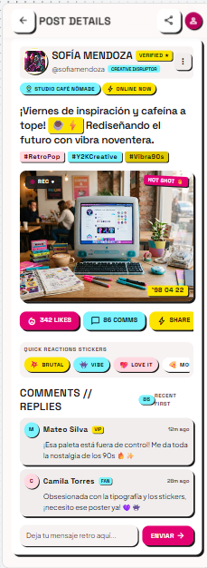
Post noventero con caja de comentarios llamativa, iconos pop y badges de colores.
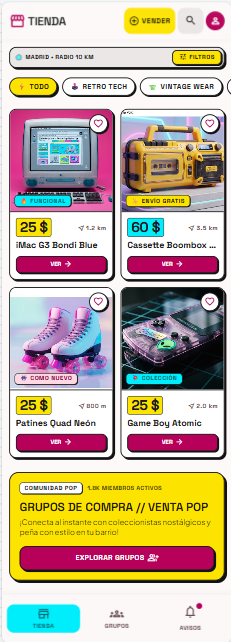
Catálogo retro con tarjetas de alto contraste, precios en amarillo y botones magenta.
4 tarjetas completas con avatares arcade, badges temáticos y barra inferior encuadrada.
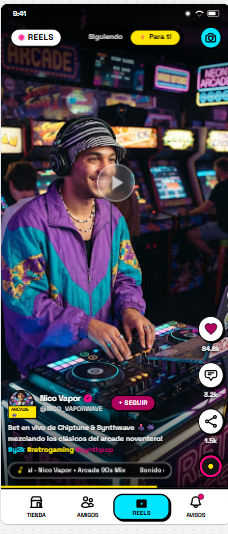
Vídeo de skater/DJ noventero con overlays pop de alto contraste y audio vinilo.
🏛️ Minimalista Moderno (Dimensiones 390 x 986)
Estética escandinava sobria, roble claro, tonos cálidos y tipografía armónica Plus Jakarta Sans.
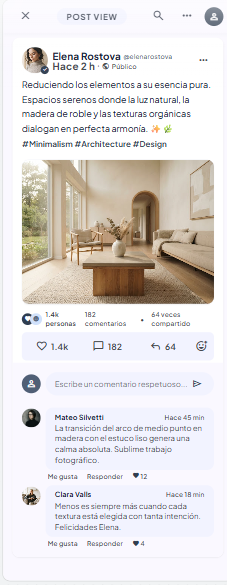
Publicación de interiorismo de Elena Rostova con tipografía elegante combinada.
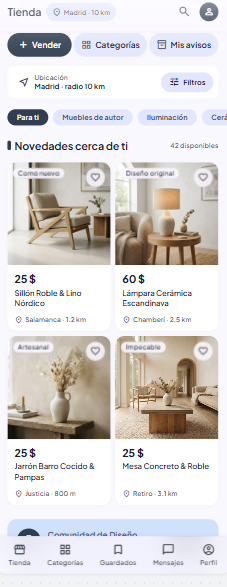
Catálogo de mobiliario nórdico adaptado a las medidas exactas especificadas.
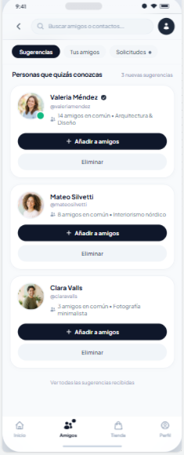
Tarjetas limpias con avatares circulares, badges sutiles y acciones de amistad claras.
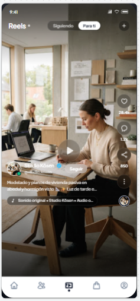
Reel de arquitectura Studio Kōsen con reproducción vertical limpia y estética sobria.